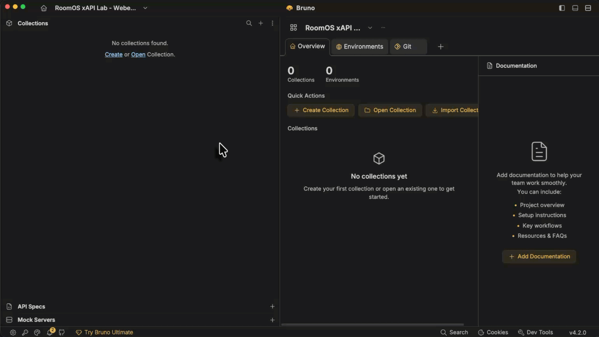
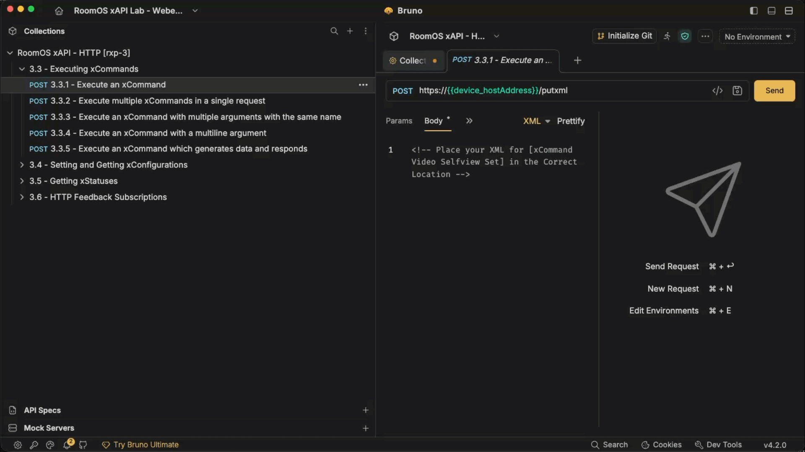
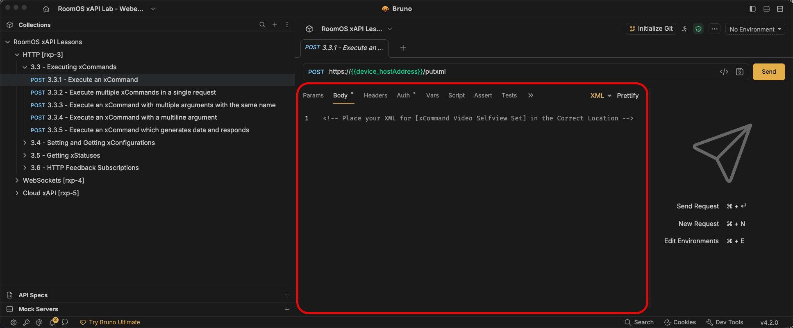
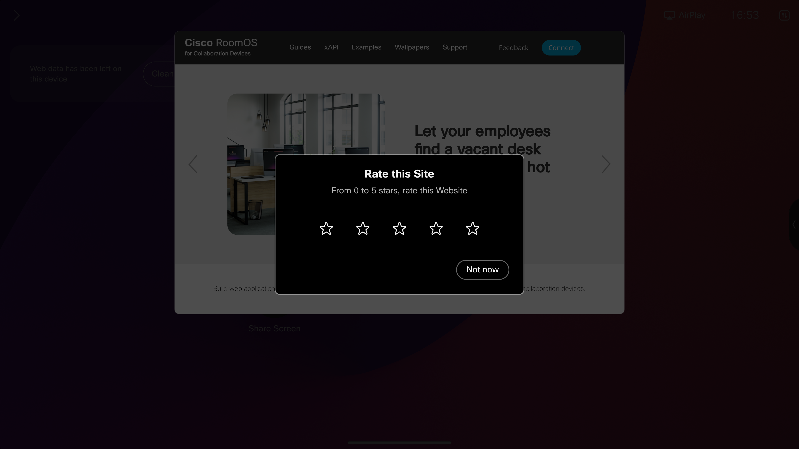
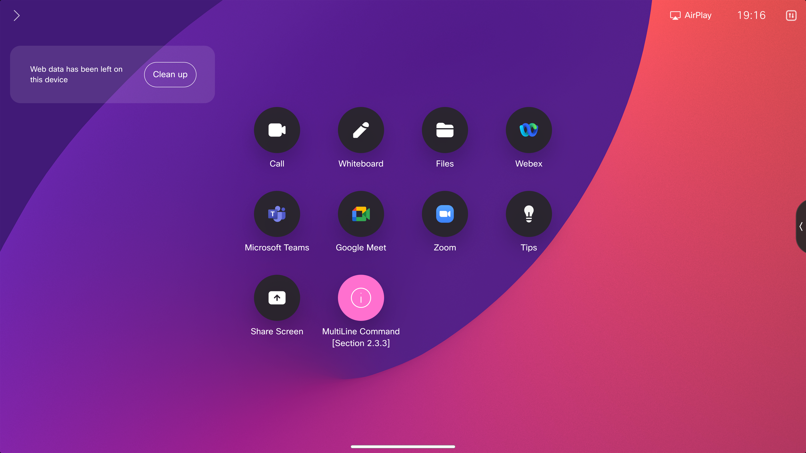
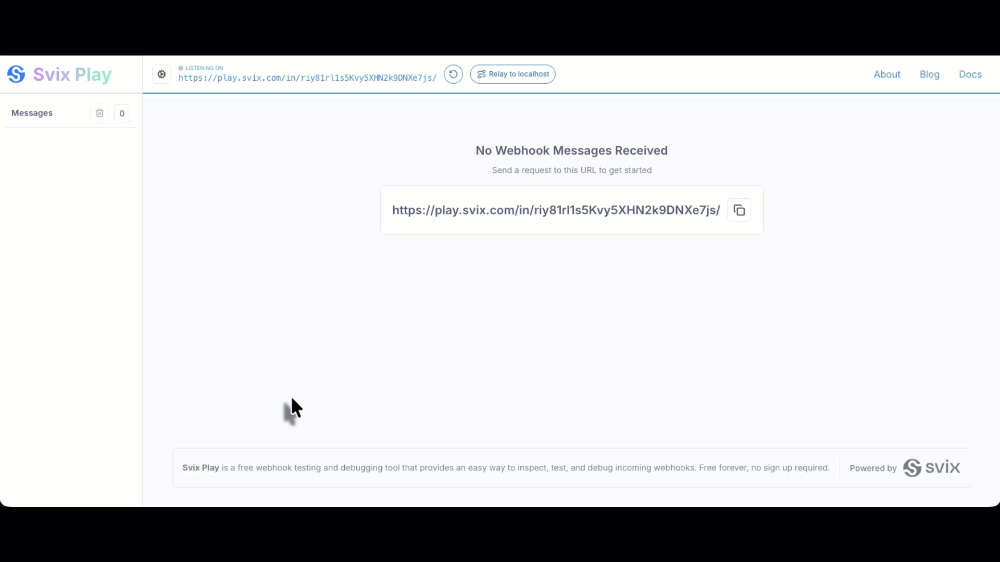
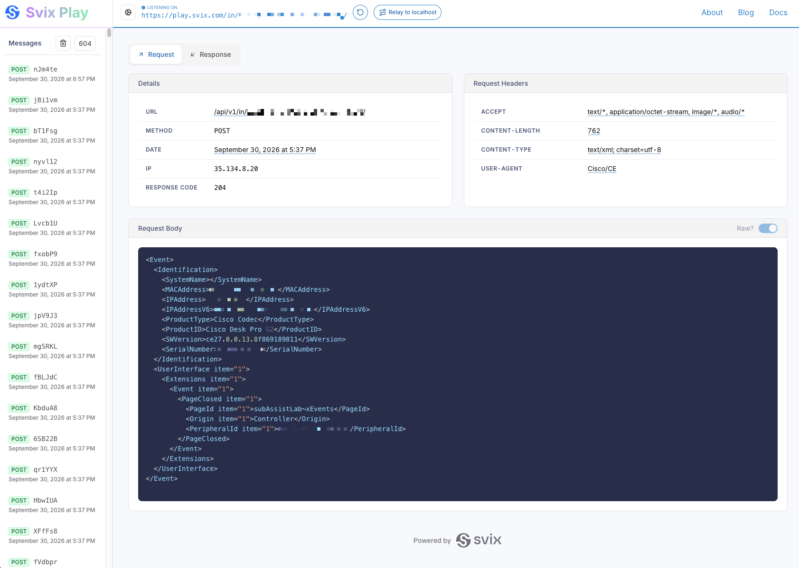
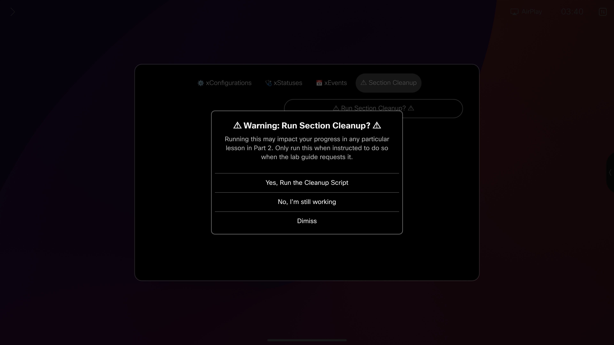

Access RoomOS xAPI via HTTP (section rxp-3)
Abstract
In this section, we'll dive into the various pieces of the RoomOS Device xAPI stack and how to make use of them in various ways over the Hypertext Transfer Protocol (HTTP) using local authentication on a Cisco RoomOS Device.
Here, we'll see the relationships between HTTP and SSH on how to structure an xConfiguration, xCommand, xStatus and xEvents to a Cisco RoomOS device
Click the Tabs Below to see how HTTP xAPI calls communicate
%%{init: {'theme':'dark'}}%%
sequenceDiagram
participant My Customization
participant Target Codec
My Customization->>+Target Codec: xStatus/xConfig Get Request
Note over My Customization,Target Codec: If Device Online
Target Codec->>- My Customization: Responds 200 OK%%{init: {'theme':'dark'}}%%
sequenceDiagram
participant My Customization
participant Target Codec
My Customization->>+Target Codec: xCommand/xConfig Post Request
Note over My Customization,Target Codec: If Device Online
Target Codec->>- My Customization: Responds 200 OK%%{init: {'theme':'dark'}}%%
sequenceDiagram
participant My Customization
participant Target Codec
activate Target Codec
Note over My Customization, Target Codec: WebHook Offered by My Customization<br>Configured in Target Codec
Target Codec -->>+ My Customization: Forwards Subscription Traffic
Note over My Customization,Target Codec: On Subscription callBack from Target Codec
deactivate Target Codec
activate My Customization
Target Codec->>+ My Customization: Ex. xEvent UserInterface Extension Panel Clicked (QuickDial)
activate Target Codec
My Customization->>+Target Codec: Responds with xCommand Dial Post Request
deactivate My Customization
Target Codec->>- My Customization: Responds 200 OKSection rxp-3 Requirements
Important
This lab assumes you have access to a Cisco RoomOS Device that is already setup and ready for use. If your device is not registered and online, please do so before beginning
Required Learning
- SSH Section rxp-1
Hardware
- A Laptop
- A Cisco Desk, Board or Room Series Device running the most recent On Premise or Cloud Stable software
Preferred Device: Cisco Desk Pro - A Touch Controller is required when working on a Room Series Device.
- Room navigator or 3rd part touch display
- A minimum of 1 camera (Either Integrated or External)
Software
-
Laptop
- Applications:
- Bruno
- Chrome or Firefox
- Section rxp-3 Bruno Collection
- Site:
- Svix
- Applications:
-
RoomOS Device
- Admin Access to the device
- RoomOS Version: Current On Premise or Cloud Stable release
- Install Subscription Assistant Macro
Section rxp-3 Setup
Bruno and WebHook Site
-
If joining from a Lab at WebexOne, Bruno should be installed on your loaner laptop already, if not, please install the application now using the link below
-
In addition to the Bruno application, please download the Bruno Collection listed below
-
We'll also be leveraging a Webhook testing site, click the link below to open this is site in a new tab
Before making HTTP requests
If you haven't entered your device host, username, and password in Setup: Cache your lab credentials, then click Update Lab Guide. The host is inserted into the URL examples below. The Basic Authentication examples show sample values; use your device's credentials in your HTTP client.
HTTP Authentication and Format (rxp-3.1)
URL Structure (rxp-3.1.1)
The request URL for your Codec will change depending on whether you're making a GET or POST request
Click the tabs below to see an example of each URL structure
https://
https://
Authentication Format (rxp-3.1.2)
When using HTTP to talk to a Cisco RoomOS Device locally, the device uses basic authentication to accept those requests. This authentication is formatted in base64 with it's username and password concatenated as a single string separated by a colon
Click on the tabs below to see how a Username and Password transitions to an encoded base64 string
Username:
Password:
"Authorization": "Basic
Leverage Your Language’s Built-In Tools
Many languages include built-in functions or standard-library tools for manipulating data. For example, Python and JavaScript can encode and decode text using Base64 for you
const response = await fetch("https://example.com/api", {
method: "POST",
headers: {
Authorization: `Basic ${btoa("admin:admin1234")}`,
},
body: "hello",
});
console.log(response.status);
import requests
response = requests.post(
"https://example.com/api",
auth=("admin", "admin1234"),
data="hello",
)
print(response.status_code)
use reqwest::blocking::Client;
fn main() -> Result<(), Box<dyn std::error::Error>> {
let response = Client::new()
.post("https://example.com/api")
.basic_auth("admin", Some("admin1234"))
.body("hello")
.send()?;
println!("{}", response.status());
Ok(())
}
Request Headers (rxp-3.1.3)
HTTP Requests have a myriad of headers that could be used, and this is usually defined by the device or service you're communicating with. For Cisco RoomOS devices using local authentication, your requests will use the following headers
| Key | Value |
|---|---|
Content-Type |
text/xml |
Authorization |
Basic [YOUR_BASE64_ENCODED_AUTH] |
GET Request Path Format (rxp-3.1.4)
When retrieving xStatus or xConfiguration information, you'll perform an HTTP Get request.
https://[ROOMOS_DEVICE_HOST_ADDRESS] The xAPI path you want to target is then defined as a URL parameter
The xAPI path is separated by a
xConfiguration SystemUnit Namehttps://[ROOMOS_DEVICE_HOST_ADDRESS] Configuration / SystemUnit / Name xStatus Logging ExtendedLogging Modehttps://[ROOMOS_DEVICE_HOST_ADDRESS] Status / Logging / ExtendedLogging / Mode Troubleshooting GET Requests
GET requests use the location parameter to select one xAPI path. If the response is empty or does not contain the value you expected:
- Check that the path starts with
ConfigurationorStatus, as appropriate. Omit the leadingxfrom the shell xAPI syntax. - Check the spelling and
/separators in the path. - Confirm that the URL contains one
locationpath.
A GET request can return 200 OK even when the path is wrong or missing. Check the XML response body to confirm the requested value was returned.
If you do not receive an xAPI XML response, check that the device is reachable, the URL and protocol are correct, and the credentials are valid. An authentication failure returns 401 Unauthorized.
POST Request Body Format (rxp-3.1.5)
When setting xConfigurations or running xCommand over HTTP, you’ll perform a POST Request.
https://[ROOMOS_DEVICE_HOST_ADDRESS] The xAPI path you want to target is then defined in the body of the request
The body is structured as XML and is formatted as a string. The entire xAPI path, parameters and any values are defined within this XML string.
The xAPI path is separated by a
https://[ROOMOS_DEVICE_HOST_ADDRESS] Click the tabs below to see an example xConfiguration and xCommand body structured as XML
Keep Commands and Configurations in Separate Requests
A
xCommand Cameras Background Get Image: value Size: value< Command >
< Cameras >
< Background >
< Get >
< Image > User1</ Image >
< Size > Large</ Size >
</ Get >
</ Background >
</ Cameras >
</ Command > xConfiguration Cameras Background Enabled: False< Configuration >
< Cameras >
< Background >
< Enabled > False</ Enabled >
</ Background >
</ Cameras >
</ Configuration > Troubleshooting POST Requests
POST requests send XML to /putxml. If the response indicates an error or the device does not behave as expected:
- Check that the XML is well formed and uses the correct root element:
Commandfor xCommands orConfigurationfor xConfigurations. - Check that the elements follow the xAPI path and that required parameters and values are valid.
- Read the XML response. Command results report their status; a configuration response should include
Success.
For multiline arguments that contain XML, follow the escaping guidance in the multiline command lesson.
If you do not receive an xAPI XML response, check that the device is reachable, the URL and protocol are correct, and the credentials are valid. An authentication failure returns 401 Unauthorized.
Full HTTP Get and Post examples (rxp-3.1.6)
Important
For reference only — no action is required. These examples show HTTP request patterns for RoomOS. You do not need to copy, run, or deploy them.
Click to view a Full Example of each written using the JavaScript Fetch API (rxp-3.1.6.a)
const myHeaders = new Headers();
myHeaders.append("Content-Type", "text/xml");
myHeaders.append("Authorization", "Basic [YOUR_BASE64_ENCODED_AUTH]");
const requestOptions = {
method: "GET",
headers: myHeaders,
redirect: "follow"
};
fetch("https://<w class="hostAddress">[ROOMOS_DEVICE_HOST_ADDRESS]</w>/getxml?location=Configuration/SystemUnit/Name", requestOptions)
.then((response) => response.text())
.then((result) => console.log(result))
.catch((error) => console.error(error));
/* Below is the Response Body after making a Successful Request
<?xml version="#"?>
<Configuration product="Cisco Codec" version="RoomOS #.#.#.#" apiVersion="#">
<SystemUnit>
<Name valueSpaceRef="/Valuespace/STR_0_50_NoFilt"> My Device Name</Name>
</SystemUnit>
</Configuration>
*/
const myHeaders = new Headers();
myHeaders.append("Content-Type", "text/xml");
myHeaders.append("Authorization", "Basic [YOUR_BASE64_ENCODED_AUTH]");
const raw = "<Configuration><SystemUnit><Name>My New System Name</Name></SystemUnit></Configuration>";
const requestOptions = {
method: "POST",
headers: myHeaders,
body: raw,
redirect: "follow"
};
fetch("https://<w class="hostAddress">[ROOMOS_DEVICE_HOST_ADDRESS]</w>/putxml", requestOptions)
.then((response) => response.text())
.then((result) => console.log(result))
.catch((error) => console.error(error));
/* Below is the Response Body after making a Successful Request
<?xml version="#"?>
<Configuration>
<Success/>
</Configuration>
*/
Click to view a Full Example of each written using the Macro Editor [ES6 JS] and your codec's HTTPClient xAPIs (rxp-3.1.6.b)
import xapi from 'xapi';
const destinationIp = '<w class="hostAddress">[ROOMOS_DEVICE_HOST_ADDRESS]</w>';
const headers = ['Content-Type: text/xml', `Authorization: Basic ${btoa('[YOUR_AUTH]')}`];
async function getPath(path){
const destinationUrl = `https://${destinationIp}/getxml?location=${path}`;
try {
const request = await xapi.Command.HttpClient.Get({
Url: destinationUrl,
Header: headers,
AllowInsecureHTTPS: 'True'
})
console.debug(request);
return request
} catch (e) {
let err = {
Context: `Failed Get Request to [${destinationUrl}]`,
...e
}
throw new Error(err)
}
}
getPath('Configuration/SystemUnit/Name');
import xapi from 'xapi';
const destinationIp = '<w class="hostAddress">[ROOMOS_DEVICE_HOST_ADDRESS]</w>';
const headers = ['Content-Type: text/xml', `Authorization: Basic ${btoa('[YOUR_AUTH]')}`];
async function setPath(body){
const destinationUrl = `https://${destinationIp}/putxml`;
try {
const request = await xapi.Command.HttpClient.Post({
Url: destinationUrl,
Header: headers,
AllowInsecureHTTPS: 'True'
}, body)
console.debug(request);
return request
} catch (e) {
let err = {
Context: `Failed Post Request to [${destinationUrl}]`,
...e
}
throw new Error(err)
}
}
setPath('<Configuration><SystemUnit><Name>My New System Name</Name></SystemUnit></Configuration>');
Learn more about Device HTTPClient xAPIs
 Hey, what's up with that
Hey, what's up with that ...e in your caught error?
Again, knowing you language has it's benefits
... is called a Spread Operator and it's very useful when playing with data in ES6 JS
We're using it here to pass the original error the xAPI produced into an err object as well as some context to help us troubleshoot our macro in the future.
Click to view a Full Example of each written using the Python Requests API (rxp-3.1.6.c)
import requests
url = "https://<w class="hostAddress">[ROOMOS_DEVICE_HOST_ADDRESS]</w>/getxml?location=Configuration/SystemUnit/Name"
payload = ""
headers = {
'Content-Type': 'text/xml',
'Authorization': 'Basic [YOUR_BASE64_ENCODED_AUTH]'
}
response = requests.request("GET", url, headers=headers, data=payload)
print(response.text)
# Below is the response body after a successful request
# <?xml version="#"?>
# <Configuration product="Cisco Codec" version="RoomOS #.#.#.#" apiVersion="#">
# <SystemUnit>
# <Name>My Device Name</Name>
# </SystemUnit>
# </Configuration>
import requests
url = "https://<w class="hostAddress">[ROOMOS_DEVICE_HOST_ADDRESS]</w>/putxml"
payload = "<Configuration><SystemUnit><Name>My New System Name</Name></SystemUnit></Configuration>"
headers = {
'Content-Type': 'text/xml',
'Authorization': 'Basic [YOUR_BASE64_ENCODED_AUTH]'
}
response = requests.request("POST", url, headers=headers, data=payload)
print(response.text)
# Below is the Response Body after making a Successful Request
# <?xml version="#"?>
# <Configuration>
# <Success/>
# </Configuration>
Import and Configure the Bruno Collection (rxp-3.2)
This collection has been pre-configured to aid you in completing the lab exercises.
Bruno will automatically take our basic auth and structure as an with Header for us and convert that string into base64
Importing the collection into Bruno
- With Bruno open, in a new or existing workspace select the
plus icon next to Collections - Select import collection
- Locate the
RoomOS xAPI - HTTP [rxp-3].zip and drag it into this window as directed - Alternatively, you can click the "Choose File" button and select the file from your computer
- Confirm the file and select Import
View how to Import Bruno Collection


Values for the Bruno collection
Enter these submitted device details in the collection's Vars fields:
- Host Address:
[ROOMOS_DEVICE_HOST_ADDRESS] - Username:
[ROOMOS_DEVICE_USERNAME] - Password:
[ROOMOS_DEVICE_PASSWORD]
Configuring the Bruno Collection
- Open Bruno
- Click on the
RoomOS xAPI - HTTP [rxp-3] collection - Select Vars4
- Fill in the following values for your Codec in the Value column
- device_hostAddress
- device_username
- device_password
- Select the Save Button
- HotKeys are available in Bruno for quick actions
- Ctrl+S for Windows
- Cmd+S for Mac
- HotKeys are available in Bruno for quick actions
- Click on the
View how to Configure Codec for Bruno Collection


Executing xCommands (rxp-3.3)
Abstract
Throughout section rxp-3.3, you'll learn how to format and execute xCommands against the codec via HTTP.
The techniques outlined here will correspond to methods needed for setting new xConfiguration Values in section rxp-3.4
Lesson: Execute an xCommand (rxp-3.3.1)
XML Body Location


-
xAPI(s):
xCommand Video Selfview Set
-
Task:
- Format
xCommand Video Selfview Set into XML - Place the newly formatted XML into the Body of the Execute an xCommand request of the Bruno HTTP rxp-3 collection
- Include the following Parameter(s) and Value(s)
- Mode: On
- FullScreenMode: On
- OnMonitorRole: First
- Save the collection
- Select Send, review the response and observe any changes on your device
- Format
View properly formatted XML and Successful Response
-
XML Body Format
<Command> <Video> <Selfview> <Set> <Mode>On</Mode> <FullScreenMode>On</FullScreenMode> <OnMonitorRole>First</OnMonitorRole> </Set> </Selfview> </Video> </Command> -
Response
<?xml version="#"?> <Command> <SelfviewSetResult status="OK"/> </Command>
Lesson: Execute multiple xCommands in a single request (rxp-3.3.2)
Info
You can structure your XML to allow for multiple xAPI calls under a single Parent Path, in this case the Parent Path is xCommand
So long as the paths you're running are placed within their appropriate Common Path Nodes, then they will be considered. Should those Common Path Nodes deviate, then you must structure the XML to match
View Single vs Multiple Command Structure
<Command>
<Macros>
<Macro>
<Save>
<Name>value</Name>
<Overwrite>False</Overwrite>
<Transpile>False</Transpile>
<body>Raw data here...</body>
</Save>
</Macro>
</Macros>
</Command>
<Command>
<Macros>
<Macro>
<Save>
<Name>value</Name>
<Overwrite>False</Overwrite>
<Transpile>False</Transpile>
<body>Raw data here...</body>
</Save>
<Activate>
<Name>value</Name>
</Activate>
</Macro>
<Runtime>
<Restart>
</Restart>
</Runtime>
</Macros>
</Command>
Note
The following xAPI(s) come pre-formatted in the request body. You must find the correct position for the final xAPI
xCommand UserInterface WebView Display xCommand UserInterface Message Rating Display
-
xAPI(s):
xCommand Video Selfview SetxCommand UserInterface WebView DisplayxCommand UserInterface Message Rating Display
-
Task:
- Format
xCommand UserInterface Message Rating Display into XML - Place the newly formatted XML into the correct position within the Body of the Execute multiple xCommands in a single request request of the Bruno HTTP rxp-3 collection
- Include the following Parameter(s) and Value(s)
- Title: Rate this Site
- Text: From 0 to 5 stars, rate this Website
- Duration: 45
- Save the collection
- Select Send, review the response and observe any changes on your device
- Format
View Successful OSD Output


View properly formatted XML and Successful Response
-
XML Body Format
<Command> <UserInterface> <Message> <Rating> <Display> <Title>Rate this Site</Title> <Text>From 0 to 5 stars, rate this Website</Text> <Duration>45</Duration> </Display> </Rating> </Message> </UserInterface> </Command><Command> <Video> <Selfview> <Set> <Mode>Off</Mode> </Set> </Selfview> </Video> <UserInterface> <WebView> <Display> <Mode>Modal</Mode> <Url>https://roomos.cisco.com</Url> </Display> </WebView> <!-- Message Rating Display Should Start Here --> <Message> <Rating> <Display> <Title>Rate this Site</Title> <Text>From 0 to 5 stars, rate this Website</Text> <Duration>45</Duration> </Display> </Rating> </Message> <!-- Message Rating Display Should End Here --> </UserInterface> </Command> -
Response
<?xml version="#"?> <Command> <SelfviewSetResult status="OK"/> <WebViewDisplayResult status="OK"/> <RatingDisplayResult status="OK"/> </Command>
Lesson: Execute an xCommand with multiple arguments with the same name (rxp-3.3.3)
Info
Some xCommands offer parameters that can receive multiple arguments with the same name.
We can structure the XML payload this way by simply duplicating the parameter and add that into your XML body.
View Single vs Multiple Parameter Structure
Note
Not all xCommands allows multiple arguments, be sure to review the xAPI's documentation on roomos.cisco.com
<Command>
<Presentation>
<Start>
<ConnectorId>1</ConnectorId>
</Start>
</Presentation>
</Command>
<Command>
<Presentation>
<Start>
<ConnectorId>1</ConnectorId>
<ConnectorId>2</ConnectorId>
<ConnectorId>3</ConnectorId>
</Start>
</Presentation>
</Command>
Note
The following xAPI(s) come pre-formatted in the request body and clean up the previous lesson's work. You must find the correct position for the final xAPI
xCommand UserInterface WebView Clear xCommand UserInterface Message Rating Clear xCommand Video Selfview Set
-
xAPI(s):
- xCommand UserInterface WebView Clear
- xCommand UserInterface Message Rating Clear
- xCommand Video Selfview Set
- xCommand Video Input SetMainVideoSource
-
Task:
- Format
xCommand Video Input SetMainVideoSource into XML - Place the newly formatted XML into the correct position within the Body of the Execute an xCommand with multiple arguments with the same name request of the Bruno HTTP rxp-3 collection
- Include the following Parameter(s) and Value(s)
- ConnectorId: 1
- Layout: Prominent
- Duplicate the following Parameter(s) and Value(s) once
- ConnectorId: 1
- Note: Typically we would not duplicate the same connector with the xAPI, but for the purposes of this lab, we will and prove out how this structured.
- Save the collection
- Select Send, review the response and observe any changes on your device
- Format

View properly formatted XML and Successful Response
-
XML Body Format
<Command> <Video> <Input> <SetMainVideoSource> <ConnectorId>1</ConnectorId> <!-- Your Duplicate ConnectorId Parameter Should Start Here --> <ConnectorId>1</ConnectorId> <!-- Your Duplicate ConnectorId Parameter Should End Here --> <Layout>Prominent</Layout> </SetMainVideoSource> </Input> </Video> </Command><Command> <UserInterface> <WebView> <Clear></Clear> </WebView> <Message> <Rating> <Clear></Clear> </Rating> </Message> </UserInterface> <Video> <Selfview> <Set> <Mode>On</Mode> <FullScreenMode>On</FullScreenMode> <OnMonitorRole>First</OnMonitorRole> </Set> </Selfview> <Input> <SetMainVideoSource> <ConnectorId>1</ConnectorId> <!-- Your Duplicate ConnectorId Parameter Should Start Here --> <ConnectorId>1</ConnectorId> <!-- Your Duplicate ConnectorId Parameter Should End Here --> <Layout>Prominent</Layout> </SetMainVideoSource> </Input> </Video> </Command> -
Response
<?xml version="#"?> <Command> <WebViewClearResult status="OK"/> <RatingClearResult status="OK"/> <SelfviewSetResult status="OK"/> <InputSetMainVideoSourceResult status="OK"/> </Command>
Lesson: Execute an xCommand with a multiline argument (rxp-3.3.4)
Info
The structure of a Multiline argument should look similar to the following
<Parent>
<Child>
<ChildParameter>Value</ChildParameter>
<body> [MY_MULTILINE_ARGUMENT] </body>
</Child>
</Parent>Note
The following xAPI(s) come pre-formatted in the request body. You must find the correct position for the final xAPI
xCommand Video Selfview Set xCommand Video Input SetMainVideoSource
-
xAPI(s):
- xCommand Video Selfview Set
- xCommand Video Input SetMainVideoSource
- xCommand UserInterface Extensions Panel Save
-
Task:
- Format
xCommand UserInterface Extensions Panel Save into XML - Place the newly formatted XML into the correct position within the Body of the Execute an xCommand with a multiline argument request of the Bruno HTTP rxp-3 collection
-
Include the following Parameter(s) and Value(s)
- PanelId: wx1_lab_multilineCommand
-
body:
Value for your <body> tag<Extensions> <Panel> <Order>1</Order> <PanelId>wx1_lab_multilineCommand</PanelId> <Location>HomeScreen</Location> <Icon>Info</Icon> <Color>#FF70CF</Color> <Name>MultiLine Command [Section rxp-3.3]</Name> <ActivityType>Custom</ActivityType> </Panel> </Extensions>Wrapping XML Around XML
Note
Not all multiline arguments use XML. For example,
xCommand Bookings Put uses a JSON string, whilexCommand UserInterface Branding Upload uses a Base64-encoded string.Data placed inside a
<body>tag must be provided as a string. If that string contains XML, escape the inner XML tags before placing them in the body.For example: - replace
<with<- replace>with>If the body argument contains unescaped XML, the endpoint may have trouble distinguishing the body’s XML value from the outer xAPI XML payload in the HTTP POST. This can cause an error.
Escape the XML in the body argument before sending it.
You can use Stringify XML Body on the Tools page to do this for you.
-
Save the collection
- Select Send, review the response and observe any changes on your device
- Format
View Successful OSD Output


View properly formatted XML and Successful Response
-
XML Body Format
<Command> <UserInterface> <Extensions> <Panel> <Save> <PanelId>wx1_lab_multilineCommand</PanelId> <body><Extensions> <Panel> <Order>1</Order> <PanelId>wx1_lab_multilineCommand</PanelId> <Location>HomeScreen</Location> <Icon>Info</Icon> <Color>#FF70CF</Color> <Name>MultiLine Command [Section rxp-3.3]</Name> <ActivityType>Custom</ActivityType> </Panel> </Extensions> </body> </Save> </Panel> </Extensions> </UserInterface> </Command><Command> <Video> <Selfview> <Set> <Mode>Off</Mode> </Set> </Selfview> <Input> <SetMainVideoSource> <ConnectorId>1</ConnectorId> <Layout>Equal</Layout> </SetMainVideoSource> </Input> </Video> <!-- Your UserInterface Extensions Panel Save XML Should Start Here --> <UserInterface> <Extensions> <Panel> <Save> <PanelId>wx1_lab_multilineCommand</PanelId> <body><Extensions> <Panel> <Order>1</Order> <PanelId>wx1_lab_multilineCommand</PanelId> <Location>HomeScreen</Location> <Icon>Info</Icon> <Color>#FF70CF</Color> <Name>MultiLine Command [Section rxp-3.3]</Name> <ActivityType>Custom</ActivityType> </Panel> </Extensions> </body> </Save> </Panel> </Extensions> </UserInterface> <!-- Your UserInterface Extensions Panel Save XML Should End Here --> </Command> -
Response
<?xml version="#"?> <Command> <SelfviewSetResult status="OK"/> <InputSetMainVideoSourceResult status="OK"/> <PanelSaveResult status="OK"/> </Command>
Lesson: Execute an xCommand which generates data and responds (rxp-3.3.5)
Info
Some commands will generate data and output a response. All commands will respond with an "OK" or "Error" but others can provide additional information.
Whereas we made a UI extension with xCommand UserInterface Extensions Panel Save, we can now pull a list of our custom extensions using the xAPI
Note
The following xAPI(s) will only produce information in the request response, you should not see a change on your device
-
xAPI(s):
xCommand UserInterface Extensions List
-
Task:
- Format
xCommand UserInterface Extensions List into XML - Place the newly formatted XML into the correct position within the Body of the Execute an xCommand which generates data and responds request of the Bruno HTTP rxp-3 collection
- Include the following Parameter(s) and Value(s)
- ActivityType: Custom
- Save the collection
- Select Send, review the response and observe any changes on your device
- Format
View properly formatted XML and Successful Response
-
XML Body Format
<Command> <UserInterface> <Extensions> <List> <ActivityType>Custom</ActivityType> </List> </Extensions> </UserInterface> </Command> -
Response
<?xml version="#"?> <Command> <ExtensionsListResult status="OK"> <Extensions> <Version>1.11</Version> <Panel item="1" maxOccurrence="n"> <Icon>Info</Icon> <Location>HomeScreen</Location> <ActivityType>Custom</ActivityType> <Name>MultiLine Command [Section rxp-3.3]</Name> <PanelId>wx1_lab_multilineCommand</PanelId> <Origin>local</Origin> <Order>1</Order> <Color>#FF70CF</Color> <Visibility>Auto</Visibility> </Panel> </Extensions> </ExtensionsListResult> </Command>
Setting and Getting xConfigurations (rxp-3.4)
Abstract
Throughout section rxp-3.4, you'll learn how to format, set and get xConfigurations against the codec via HTTP.
The techniques outlined here will correspond to the methods needed for Getting xStatus Values in section rxp-3.5
Lesson: Set a new xConfiguration Value (rxp-3.4.1)
-
xAPI(s):
xConfiguration Audio DefaultVolume
-
Task:
- Format
xConfiguration Audio DefaultVolume into XML - Place the newly formatted XML into the Body of the Set a new xConfiguration Value request of the Bruno HTTP rxp-3 collection
- Include the following Parameter(s) and Value(s)
- DefaultVolume: 75
- Save the collection
- Select Send and review the response
- Format
View properly formatted XML and Successful Response
-
XML Body Format
<Configuration> <Audio> <DefaultVolume>75</DefaultVolume> </Audio> </Configuration> -
Response
<?xml version="#"?> <Configuration> <Success/> </Configuration>
Lesson: Set multiple xConfiguration Values in a single Request (rxp-3.4.2)
Note
The following xAPI(s) come pre-formatted in the request body. You must find the correct position for the final xAPI
xConfiguration Audio DefaultVolume
-
xAPI(s):
xConfiguration Audio DefaultVolume xConfiguration SystemUnit Name
-
Task:
- Format
xConfiguration SystemUnit Name into XML - Place the newly formatted XML in the correct position within the Body of the Set multiple xConfiguration Values in a single Request request of the Bruno HTTP rxp-3 collection
- Include the following Parameter(s) and Value(s)
- Name: Codec_
X - Replace
X with your workstation pod number or your name
- Replace
- Name: Codec_
- Save the collection
- Select Send and review the response
- Format
View properly formatted XML and Successful Response
-
XML Body Format
<Configuration> <SystemUnit> <Name>Codec_X</Name> </SystemUnit> </Configuration><Configuration> <Audio> <DefaultVolume>50</DefaultVolume> </Audio> <!-- SystemUnit Name Should Start Here --> <SystemUnit> <Name>Codec_X</Name> </SystemUnit> <!-- SystemUnit Name Should End Here --> </Configuration> -
Response
<?xml version="#"?> <Configuration> <Success/> </Configuration>
Lesson: Getting an xConfiguration Value (rxp-3.4.3)
Info
In the previous lesson, you set the
As shown in section rxp-3.1.4, omit the
Can I used the location parameter more than once?
Unfortunately no, the location parameter will only be caught once in the URL. Duplicates after the fact will be ignored
You can only define 1 path per GET request
-
xAPI(s):
xConfiguration Audio DefaultVolume
-
Task:
- Format
xConfiguration Audio DefaultVolume for the GET URL path - Place the path after
?location= in the URL of the Getting an xConfiguration Value request in the Bruno HTTP rxp-3 collection - Save the collection
- Select Send and review the response
- Format
View properly formatted URL and Successful Response
https://{{ device_hostAddress }}/getxml?location =Configuration/Audio/DefaultVolume <?xml version="#"?>
<Configuration product="Cisco Codec" version="RoomOS #.#.#.#" apiVersion="#">
<Audio>
<DefaultVolume valueSpaceRef="/Valuespace/INT_0_100">50 </DefaultVolume >
</Audio>
</Configuration>Lesson: Get multiple xConfiguration Values under a Common Node (rxp-3.4.4)
Info
You can pull more information if you move up to a Common Node
By removing
-
xAPI(s):
xConfiguration Audio
-
Task:
- Format
xConfiguration Audio for the GET URL path - Place the path after
?location= in the URL of the Getting multiple xConfiguration Values under a Common Node request in the Bruno HTTP rxp-3 collection - Save the collection
- Select Send and review the response
- Format
View properly formatted URL and Successful Response
https://{{ device_hostAddress }}/getxml?location =Configuration/Audio <?xml version="#"?>
<Configuration product="Cisco Codec" version="RoomOS #.#.#.#" apiVersion="#">
<Audio >
<DefaultVolume valueSpaceRef="/Valuespace/INT_0_100">50 </DefaultVolume >
<Ethernet >
<Encryption valueSpaceRef="/Valuespace/TTPAR_RequiredOptional">Required </Encryption >
<SAPDiscovery >
<Address valueSpaceRef="/Valuespace/STR_0_64_IPv4AdminMcast">239.255.255.255 </Address >
<Mode valueSpaceRef="/Valuespace/TTPAR_OnOff">Off </Mode >
</SAPDiscovery >
</Ethernet >
<!-- Additional configuration values omitted for brevity -->
</Audio >
</Configuration > What about subscribing to an xConfiguration, like with SSH?
Subscriptions via HTTP are possible, but require a process outside of using HTTP POST/GET commands. We'll need to leverage the HttpFeedback feature of the codec and a tool that can receive a WebHook event
So we'll save HttpFeedback for the end of section rxp-3 and handle all HTTP based subscriptions there
Getting xStatuses (rxp-3.5)
Abstract
Throughout section rxp-3.5, you'll learn how to retrieve current xStatus values from the codec via HTTP.
The GET request patterns from section rxp-3.4 apply here as well.
Lesson: Getting an xStatus Value (rxp-3.5.1)
-
xAPI(s):
xStatus Audio Volume
-
Task:
- Format
xStatus Audio Volume for the GET URL path - Place the path after
?location= in the URL of the Getting an xStatus request in the Bruno HTTP rxp-3 collection - Save the collection
- Select Send and review the response
- Format
View properly formatted URL and Successful Response
https://{{ device_hostAddress }}/getxml?location =Status/Audio/Volume <?xml version="#"?>
<Status product="Cisco Codec" version="RoomOS #.#.#.#" apiVersion="#">
<Audio >
<Volume >65 </Volume >
</Audio >
</Status >Lesson: Get multiple xStatus Values under a Common Node (rxp-3.5.2)
-
xAPI(s):
xStatus Audio
-
Task:
- Format
xStatus Audio for the GET URL path - Place the path after
?location= in the URL of the Getting multiple xStatus Values under a Common Node request in the Bruno HTTP rxp-3 collection - Save the collection
- Select Send and review the response
- Format
View properly formatted URL and Successful Response
https://{{ device_hostAddress }}/getxml?location =Status/Audio <?xml version="#"?>
<Status product="Cisco Codec" version="RoomOS #.#.#.#" apiVersion="#">
<Audio >
<Devices >
<Bluetooth >
<ActiveProfile >None </ActiveProfile >
</Bluetooth >
<HandsetUSB >
<ConnectionStatus >NotConnected </ConnectionStatus >
<Cradle >OnHook </Cradle >
</HandsetUSB >
<HeadsetUSB >
<ConnectionStatus >NotConnected </ConnectionStatus >
<Description ></Description >
<Manufacturer ></Manufacturer >
</HeadsetUSB >
<!-- Additional status values omitted for brevity -->
</Devices >
</Audio >
</Status >HTTP Subscriptions using HttpFeedback xAPIs (rxp-3.6)
Before you begin
When using HttpFeedback in your environment, it's good to understand that this is set up per device. It's a tool in which the Codec registers a Webhook, provided by an external service, and allows the Codec to send information to that service.
When working at scale, it's best to keep a template of your HttpFeedback commands to easily deploy this to your device when commissioned and for your teams internal documentation
Macros can Help!
Later in the lab, you'll work with Macros and they can help standardize unique combinations of xCommands, like HttpFeedback. xCommands are not backed up on the endpoint like xConfigurations are, so a macro can help simplify setup and can monitor your HttpFeedback too, allowing you to self repair in case the service was deregistered by mistake.
Understanding Feedback Registrations (rxp-3.6.1)
HttpFeedback has 4 FeedbackSlots total. Each can hold up to 15 Expressions, or xAPI paths.
60 expressions total!!! Isn't there thousands of xAPIs?!?
Yes, across the 4 feedback slots you can create up to 15 expressions per slot, but remember that you can use a Higher Common Node.
With that, you could subscribe to all information on the Codec with just 3 paths, the highest paths
- Configuration
- Status
- Event
Depending on your use case, you may want to refine incoming information and make the service less chatty. It's best to only subscribe to what you need
Each register can be sent to a different WebHook URL, or all can be pointed to the same URL
Unlike SSH, setting up an HttpFeedback Registration, or HTTP based subscription, requires you to run another xCommand to apply this to the Codec.
xCommand HttpFeedback Register helps you point your subscription to the correct Webhook service
Conversely, unsubscribing also needs an xCommand
xCommand HttpFeedback Register Parameters and Expression Format (rxp-3.6.2)
xCommand HttpFeedback Register has 4 Parameters
xCommand HttpFeedback Register
Expression: <String 1 - 255 characters>
FeedbackSlot: <Number 1-4>
Format: <String: XML or JSON>
ServerUrl: <String 1 - 2048 characters>
Parameter Definitions
- Expression: The XPath expression specifies which parts of the Status, Configuration or Event XML documents are monitored. You can have from 0 to 15 XPath expressions in the same command.
- You can declare this argument multiple times up to 15
- FeedbackSlot
(Required) : Location used to store your Feedback. Note: Avoid using FeedbackSlot 3 in an environment where Cisco TelePresence Management Suite (TMS) is used as TMS uses this feedbackslot to register its expressions. - Format: Set the format for the feedback from the HTTP server to XML or JSON.
- ServerUrl
(Required) : The URL to the HTTP server where you want the codec to post the HTTP feedback messages to.
The
The xAPI path is separated by a
Click the tabs below to see examples of the base Expression structure
xFeedback Register Configuration/SystemUnit/NamexCommand HttpFeedback Register Expression : Configuration / SystemUnit / Name FeedbackSlot: 1 Format: JSON ServerUrl: [MY_WEBHOOK_ADDRESS]xFeedback Register Status/Logging/ExtendedLogging/ModexCommand HttpFeedback Register Expression : Status / Logging / ExtendedLogging / Mode FeedbackSlot: 1 Format: JSON ServerUrl: [MY_WEBHOOK_ADDRESS]xFeedback Register Event/UserInterface/Assistant/EmitxCommand HttpFeedback Register Expression : Event / UserInterface / Assistant / Emit FeedbackSlot: 1 Format: JSON ServerUrl: [MY_WEBHOOK_ADDRESS]As noted before, we can register multiple expressions under a single FeedbackSlot as well as register to a Common Higher Node.
Click the tabs below to see more examples
xFeedback Register Configuration/Peripherals/InputDevice/Mode
xFeedback Register Status/Video/Monitors
xFeedback Register Event/WebRTC/ProviderCurrentDiagnosticsSendxCommand HttpFeedback Register Expression : Configuration / Peripherals / InputDevice / Mode Expression : Status / Video / Monitors Expression : Event / WebRTC / ProviderCurrentDiagnosticsSend FeedbackSlot: 1 Format: JSON ServerUrl: [MY_WEBHOOK_ADDRESS]xFeedback Register Configuration/VideoxCommand HttpFeedback Register Expression : Configuration / Video FeedbackSlot: 1 Format: JSON ServerUrl: [MY_WEBHOOK_ADDRESS]xFeedback Register Configuration
xFeedback Register Status
xFeedback Register EventxCommand HttpFeedback Register Expression : Configuration Expression : Status Expression : Event FeedbackSlot: 1 Format: JSON ServerUrl: [MY_WEBHOOK_ADDRESS]When the registrations are complete, you'll start to see information poor into your service at the time your xAPI path generate a subscription event.
Then your service can respond in kind based on the information received or even reach out to other services
%%{init: {'theme':'dark'}}%%
sequenceDiagram
participant Target Codec
participant Webhook Service
participant External as External Service<br/>[Ex: Email]
Note over Target Codec,Webhook Service: Webhook URL is registered on the codec
Target Codec-->>Webhook Service: HTTP POST: xEvent, xStatus, or xConfiguration update
Webhook Service-->>Target Codec: HTTP 200 OK
alt xStatus requires forward to external service
Webhook Service->>External: Forward event or trigger action
External-->>Webhook Service: External service responds
end
alt xEvent requires command response to Codec
Webhook Service->>Target Codec: HTTP POST /putxml
end
Target Codec-->>Webhook Service: HTTP 200 OK with responseWarning
-
Re-running xCommand HttpFeedback Register over the FeedbackSlot same slot, overrides the values in that slot. Be sure to review your existing expressions by running xStatus HttpFeedback before applying your feedback slot. Review it's contents and make sure not to break an active services you may be running for your device.
xStatus HttpFeedback
-
Any malformed feedback expression will be ignored. The device will accept it, but since the path doesn't exist, the subscription won't fire. If you're not seeing your expression com in, then check your xAPI path(s)
Subscribing to xConfigurations, xStatuses and xEvents (rxp-3.7)
Abstract
Learn how to use RoomOS HttpFeedback to send selected xConfiguration, xStatus, and xEvent updates from a device to a webhook endpoint.
You’ll register feedback with an HTTP(S) server, inspect the incoming data with Svix, and see how device events can trigger actions in an external application.
Note
In the following lessons, we'll continue to use HTTP to complete this section.
However, setting up HttpFeedback doesn't require you to use HTTP POST or GET requests to apply them. You can set these feedbacks from any entry point where you can access the xAPI, such as SSH.
Configure your Unique URL from Svix
- Go to Svix
- Copy
your webhook URL from Svix - Open Bruno
- Click on the
RoomOS xAPI - HTTP [rxp-3] root folder- Select Vars4
- Paste
your webhook URL from Svix into in the Value column fields forSvix_Unique_URL - Select the Save Button
- HotKeys are available in Bruno for quick actions
- Ctrl+S for Windows
- Cmd+S for Mac
- HotKeys are available in Bruno for quick actions
- Click on the
View how to Configure Svix for Bruno Collection


View Example Svix output


Lesson: Subscribing to an xConfiguration (rxp-3.7.1)
-
xAPI(s):
xConfiguration Audio DefaultVolume
-
Task:
- Format
xConfiguration Audio DefaultVolume as an HttpFeedback Expression - Place the path within the
Expression tags in the body of theSubscribing to an xConfiguration request in the Bruno HTTP rxp-3 collection - Save the collection and select Send
- Press the
Subscription Assistant Button on your Touch Interface- Under the xConfigurations Page, move the
Audio DefaultVolume slider and release it - Observe the output on Svix
Optional : Move the slider again to generate more callbacks
- Under the xConfigurations Page, move the
- Format
View properly formatted Expression and XML Payload
-
Expression Format
Configuration/Audio/DefaultVolume -
Full XML
<Command> <HttpFeedback> <Register> <!-- Place your structured between the <Expression> tags --> <Expression>Configuration/Audio/DefaultVolume</Expression> <!-- Do not alter the remaining parameters --> <FeedbackSlot>1</FeedbackSlot> <ServerUrl>{{Svix_Unique_URL}}</ServerUrl> </Register> </HttpFeedback> </Command>
What about Unsubscribing HTTFeedback?
HTTFeedback, as you saw, requires execution of a different xCommand to get started.
Unsubscribing does the same thing, but with a deregister path. For brevity, we'll cover unsubscribing at the end of this section, as the xAPI expression is not needed in the deregistering process at all, so a dedicated lesson path is not needed.
Lesson: Subscribe to Multiple xConfigurations under a Common Node (rxp-3.7.2)
-
xAPI(s):
xConfiguration Video Input AirPlay
-
Task:
- Format
xConfiguration Video Input AirPlay as an HttpFeedback Expression - Place the path within the
Expression tags in the body of theSubscribe to Multiple xConfigurations under a Common Node request in the Bruno HTTP rxp-3 collection - Save the collection and select Send
- Press the
Subscription Assistant Button on your Touch Interface- Under the xConfigurations Page, change the buttons or toggles in the
AirPlay row - Observe the output on Svix
Optional : Change additional AirPlay settings to generate more callbacks
- Under the xConfigurations Page, change the buttons or toggles in the
- Format
View properly formatted Expression and XML Payload
-
Expression Format
Configuration/Video/Input/AirPlay -
Full XML
<Command> <HttpFeedback> <Register> <!-- Place your structured between the <Expression> tags --> <Expression>Configuration/Video/Input/AirPlay</Expression> <!-- Do not alter the remaining parameters --> <FeedbackSlot>1</FeedbackSlot> <ServerUrl>{{Svix_Unique_URL}}</ServerUrl> </Register> </HttpFeedback> </Command>
Lesson: Subscribing to an xStatus (rxp-3.7.3)
-
xAPI(s):
xStatus Audio Volume
-
Task:
- Format
xStatus Audio Volume as an HttpFeedback Expression - Place the path within the
Expression tags in the body of theSubscribing to an xStatus request in the Bruno HTTP rxp-3 collection - Save the collection and select Send
- Press the
Subscription Assistant Button on your Touch Interface- Under the xStatuses Page, move the
Adjust Volume slider and release it - Alternatively, adjust the volume using the Codec's native volume controls
- Observe the callback at Svix
- Under the xStatuses Page, move the
- Format
View properly formatted Expression and XML Payload
-
Expression Format
Status/Audio/Volume -
Full XML
<Command> <HttpFeedback> <Register> <!-- Place your structured between the <Expression> tags --> <Expression>Status/Audio/Volume</Expression> <!-- Do not alter the remaining parameters --> <FeedbackSlot>2</FeedbackSlot> <ServerUrl>{{Svix_Unique_URL}}</ServerUrl> </Register> </HttpFeedback> </Command>
Lesson: Subscribe to Multiple xStatuses under a Common Node (rxp-3.7.4)
-
xAPI(s):
xStatus Cameras Camera[n] Position
-
Task:
- Format
xStatus Cameras Camera[n] Position as an HttpFeedback Expression - Place the path within the
Expression tags in the body of theSubscribe to Multiple xStatuses under a Common Node request in the Bruno HTTP rxp-3 collection - Save the collection and select Send
- Press the
Subscription Assistant Button on your Touch Interface- Under the xStatuses Page, use the button in the
Camera Control Wheel row- Alternatively, move a camera using the native camera control interface
- Observe the output on Svix
- Under the xStatuses Page, use the button in the
- Format
View properly formatted Expression and XML Payload
-
Expression Format
Status/Cameras/Camera/Position -
Full XML
<Command> <HttpFeedback> <Register> <!-- Place your structured between the <Expression> tags --> <Expression>Status/Cameras/Camera/Position</Expression> <!-- Do not alter the remaining parameters --> <FeedbackSlot>2</FeedbackSlot> <ServerUrl>{{Svix_Unique_URL}}</ServerUrl> </Register> </HttpFeedback> </Command>
Lesson: Subscribing to an xEvent (rxp-3.7.5)
-
xAPI(s):
xEvent UserInterface Message Prompt Response
-
Task:
- Format
xEvent UserInterface Message Prompt Response as an HttpFeedback Expression - Place the path within the
Expression tags in the body of theSubscribing to an xEvent request in the Bruno HTTP rxp-3 collection - Save the collection and select Send
- Press the
Subscription Assistant Button on your Touch Interface- Under the xEvents Page, press the
Prompt button in theUserInterface Message row and choose an option - Observe the callback at Svix
Optional : Try the TextInput, Rating, or Alert buttons; Only the Prompt options should produce an event for this Prompt Response expression
- Under the xEvents Page, press the
- Format
View properly formatted Expression and XML Payload
-
Expression Format
Event/UserInterface/Message/Prompt/Response -
Full XML
<Command> <HttpFeedback> <Register> <!-- Place your structured between the <Expression> tags --> <Expression>Event/UserInterface/Message/Prompt/Response</Expression> <!-- Do not alter the remaining parameters --> <FeedbackSlot>3</FeedbackSlot> <ServerUrl>{{Svix_Unique_URL}}</ServerUrl> </Register> </HttpFeedback> </Command>
Lesson: Subscribe to Multiple xEvents under a Common Node (rxp-3.7.6)
-
xAPI(s):
xEvent UserInterface
-
Task:
- Format
xEvent UserInterface as an HttpFeedback Expression - Place the path within the
Expression tags in the body of theSubscribe to Multiple xEvents under a Common Node request in the Bruno HTTP rxp-3 collection - Save the collection and select Send
- Press the
Subscription Assistant Button on your Touch Interface- Under the xEvents Page, use any widget and complete its action
- Observe the output on Svix
Optional : Try several widgets and compare their callbacks
- Format
View properly formatted Expression and XML Payload
-
Expression Format
Event/UserInterface -
Full XML
<Command> <HttpFeedback> <Register> <!-- Place your structured between the <Expression> tags --> <Expression>Event/UserInterface</Expression> <!-- Do not alter the remaining parameters --> <FeedbackSlot>3</FeedbackSlot> <ServerUrl>{{Svix_Unique_URL}}</ServerUrl> </Register> </HttpFeedback> </Command>
Lesson: Register Multiple Feedback Expressions in a single Feedback Slot (rxp-3.7.7)
-
xAPI(s):
xConfiguration xStatus xEvent
-
Task:
- Format
xConfiguration, xStatus and xEvent as an HttpFeedback Expressions each listed as a separate argument - Place each the path within their own
Expression tags in the body of theSubscribe to Multiple xEvents under a Common Node request in the Bruno HTTP rxp-3 collection - Save the collection and select Send
- You should start to see many events come into the endpoint, but you can also interact with element within the
Subscription Assistant Button on your Touch Interface- Observe the output on Svix
- Format
From the RoomOS API Guide:
A device may give very much feedback, especially when calls are connected and disconnected. Do only subscribe to the feedback you need.
Never register for all status feedback by issuing xFeedback register /Status. This may give the control application too much data to handle, which may lead to sluggish or unpredictable behavior.
We're registering all subscriptions purely for lab use, it's best only to subscribe for what you need or what your service is capable of.
View properly formatted Expression and XML Payload
-
Expression Format
Configuration Status Event -
Full XML
<Command> <HttpFeedback> <Register> <!-- Place your structured between the <Expression> tags --> <Expression>Configuration</Expression> <Expression>Status</Expression> <Expression>Event</Expression> <!-- Do not alter the remaining parameters --> <FeedbackSlot>4</FeedbackSlot> <ServerUrl>{{Svix_Unique_URL}}</ServerUrl> </Register> </HttpFeedback> </Command>
Lesson: Deregister FeedbackSlots (rxp-3.7.8)
- xAPI(s):
-
xCommand HttpFeedback Deregister -
Task:
- The XML is pre-structured as the last item in your
Deregister FeedbackSlots request in the Bruno HTTP rxp-3 collection - Review the XML
- Select Send and events should stop coming into Svix
- The XML is pre-structured as the last item in your
Section rxp-3 Cleanup (rxp-3).8)
Important
- Press the
Subscription Assistant Button on your Touch Interface - Under the
Section Cleanup Page, select theRun Section Cleanup? button - Select
Yes, Run the Cleanup Script


This will reverse the changes we've made to the endpoint, and leave us ready for the next section
You can run the cleanup process via terminal as well
Copy the contents below into your terminal window and run them all at once
xFeedback DeregisterAll
xCommand HttpFeedback Deregister FeedbackSlot: 1
xCommand HttpFeedback Deregister FeedbackSlot: 2
xCommand HttpFeedback Deregister FeedbackSlot: 3
xCommand HttpFeedback Deregister FeedbackSlot: 4
xConfiguration Audio DefaultVolume: 50
xCommand UserInterface Extensions Panel Remove PanelId: wx1_lab_multilineCommand
xCommand Video SelfView Set Mode: Off FullscreenMode: Off
xCommand Video Input SetMainVideoSource ConnectorId: 1
xCommand Audio Volume SetToDefault Device: Internal